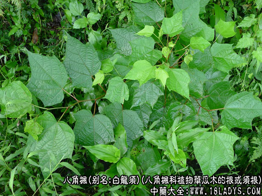
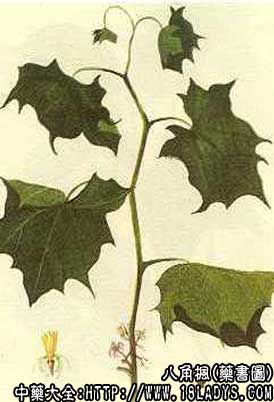

原文出处:本文转载自中药大全网。
原文连接:https://www.daquan.com/post/2408.html
原文连接:https://www.daquan.com/post/2408.html



别名：白龙须、白金条、八角柴、白蜡金、林十叶、万字格。
来源：为八角枫科植物华瓜木的根或须根。
植物形态：落叶小乔木或灌木。通常4～10m高。单叶互生，叶长5～18cm，宽4～12cm，全缘，有角或分裂，基部偏斜，叶面散生细毛或仅基部沿叶脉有毛，叶背除脉腋内有丝毛外其余近无毛。聚伞花序腋生，花白色，长1～1.2cm；浆果卵形，熟时黑色。花期6～7月，果期9～10月。
生于山坡疏林、田边、路旁。分布于贵州及长江流域以南各地。
主要成分：八角枫须根及根皮含生物碱、酚类、氨基酸、有机酸、树脂。须根主要含生物碱及糖甙、强心甙。
性味：辛，温。有毒。
功效与作用：祛风除湿，散瘀镇痛，平喘止咳。
临床运用：1、治风湿麻木：白金条6g，泡酒50ml，每次服20ml。
2、治跌打损伤：白龙须根6g，算盘子根皮15g，刺五加30g，泡酒服。
3、治劳伤腰痛：白金条6g，牛膝、生杜仲各30g，酒水各250ml，水煎服。
4、治喘咳：白龙须须根3g，炖肉吃。
5、治痨咳：白龙须须根6g，煮甜酒服。
用量：支根：3～6g；须根：0.5～3g。
附注：八角枫支根名白金条，须根为白龙须。通常认为白龙须毒性较白金条大。服药后会感觉萎软。故白龙须每次不能超过3g，白金条每次不能超过6g。